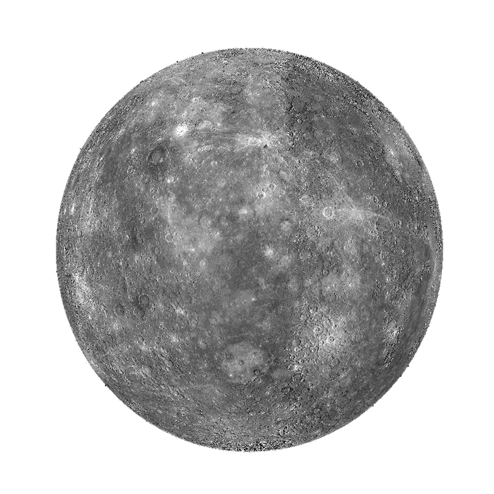
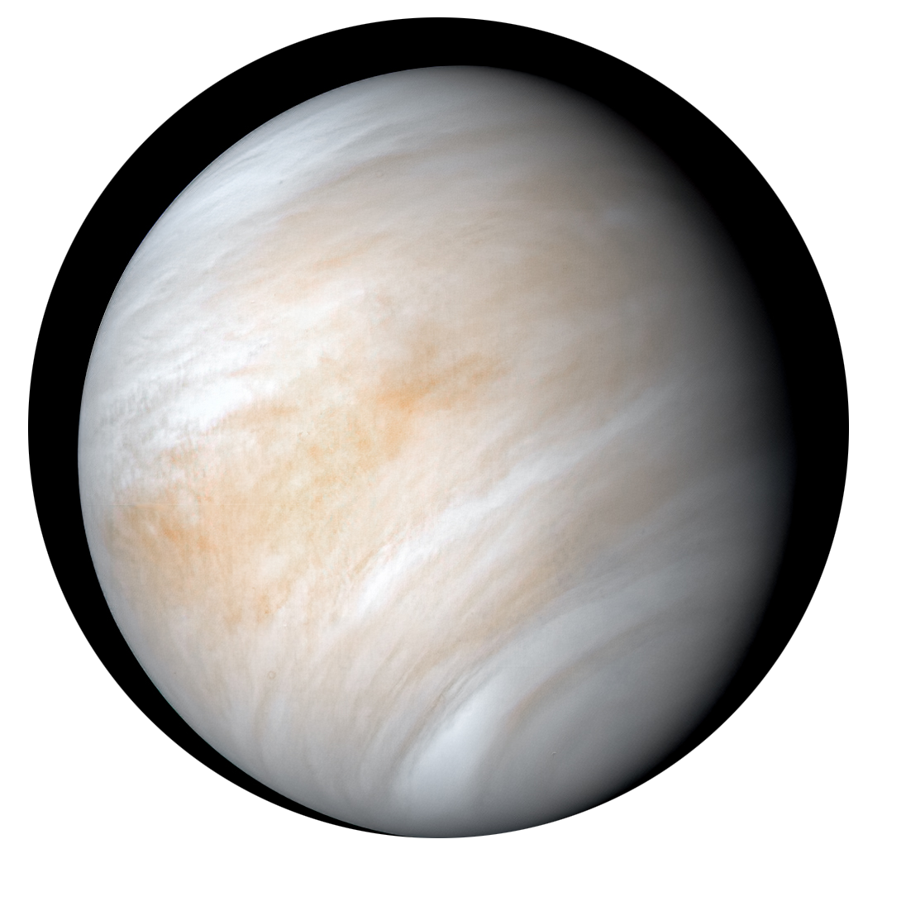
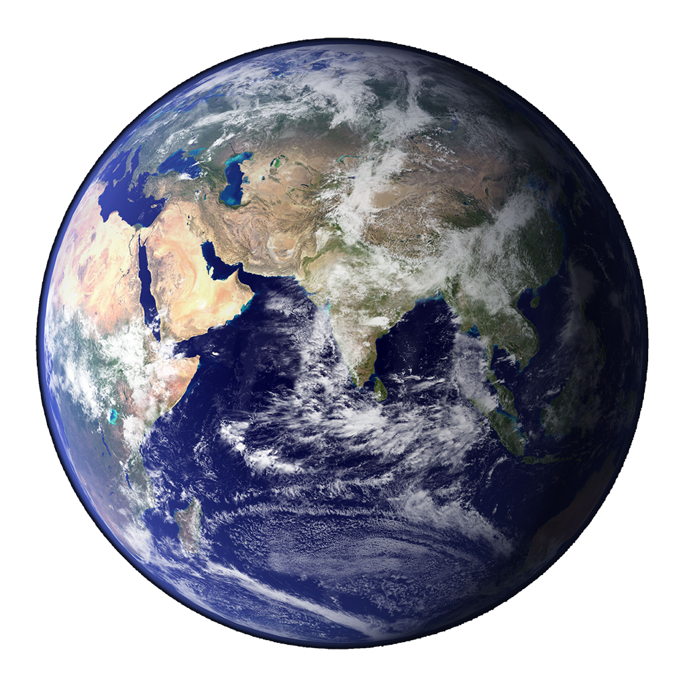
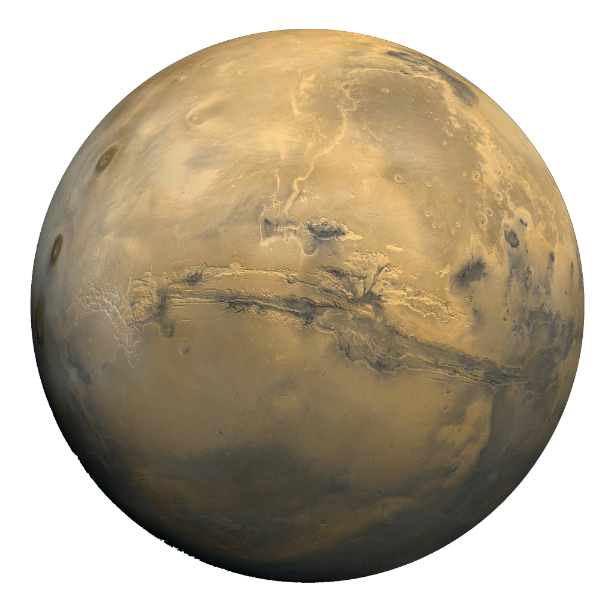
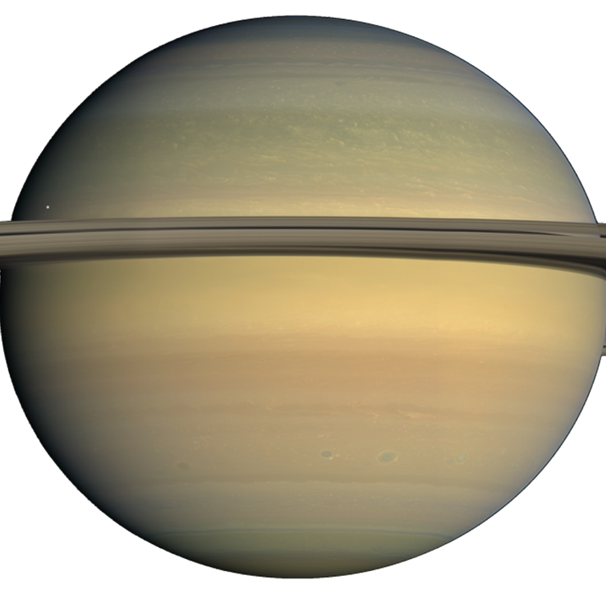
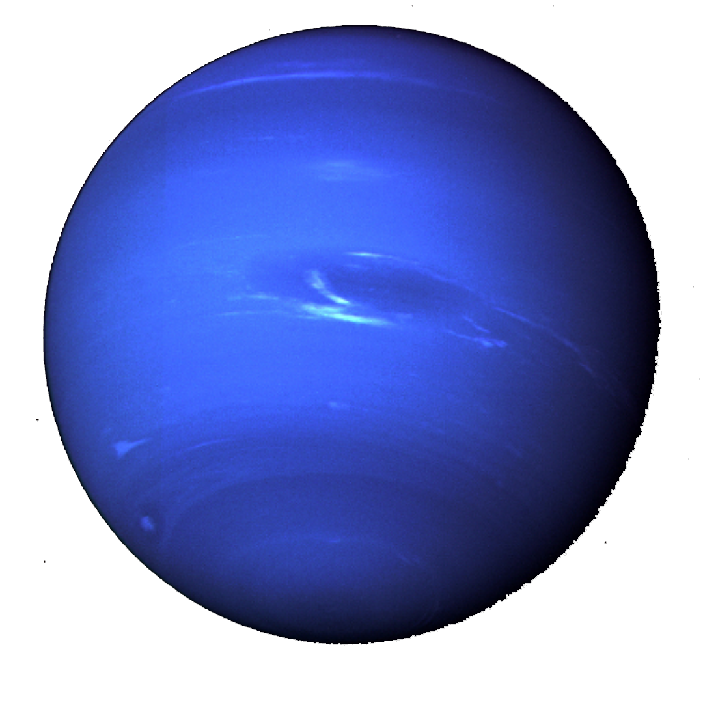

Planète la plus proche du Soleil et la moins massive du Système solaire
Visible à l'œil nu depuis la Terre
Trois fois plus petite et presque vingt fois moins massive que la Terre
Surface très fortement cratérisée et globalement similaire à la face cachée de la Lune

Vénus
Deuxième planète du Système solaire par ordre d'éloignement au Soleil, et la sixième plus grosse
Planète la plus chaude du Système solaire
Son diamètre vaut 95 % de celui de la Terre
Beaucoup plus de volcans que la Terre, dont 167 grands volcans de plus de 100 km de diamètre

Terre
Troisième planète à partir du Soleil
Atmosphère : 21% d'oxygène
Seule planète avec de l'eau liquide a sa surface
Seule planète détenant la vie

Mars
Environ dix fois moins massive que la Terre.
Nombreuses tempêtes de poussières qui obscurcissent parfois la planète tout entière.
La caractéristique particulière de l'atmosphère martienne est d'être constamment chargée en poussière
Température allant de - 89°C à -31°C

Jupiter
Plus grosse planète du Système solaire, plus volumineuse et massive que toutes les autres planètes réunies
Visible à l'œil nu dans le ciel nocturne, Jupiter est habituellement le quatrième objet le plus brillant de la voûte
céleste, après le Soleil, la Lune et Vénus
Vents violents, de près de 600 km/h
Trois fois plus grande que la Terre au début du xxe siècle, elle a rétréci pour devenir de taille comparable un siècle
plus tard.
Saturne
Deuxième plus grande planète par la taille et la masse après Jupiter
Visible à l'œil nu depuis la Terre
Trois fois plus petite et presque vingt fois moins massive que la Terre
Surface très fortement cratérisée et globalement similaire à la face cachée de la Lune

Uranus
Troisième planète à partir du Soleil
Atmosphère : 21% d'oxygène
Liquid water on surface
Only planet that has life (that we know of)
Neptune
Pas visible à l'œil nu
Possède les vents les plus forts connus du Système solaire, avec des vitesses atteignant jusqu'à 2 100 km/h.
Principalement composée d'hydrogène et d'hélium
-200°C

Pluton
Planète naine, la plus volumineuse connue dans le Système solaire
9ème planète du système solaire
Principalement composée de roche et de glace de méthane, mais aussi de glace d'eau et d'azote gelé.